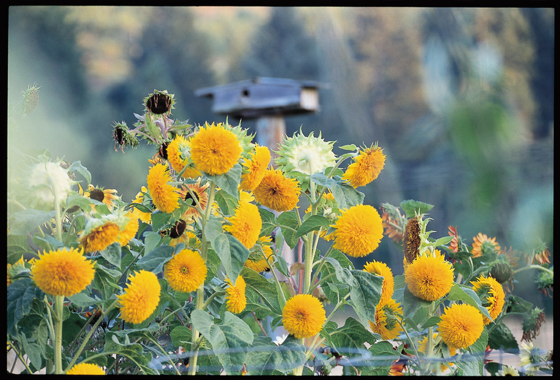
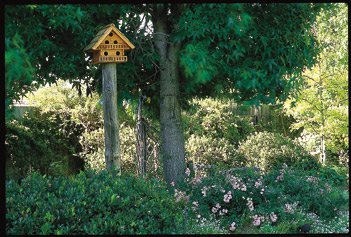
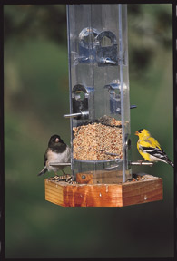
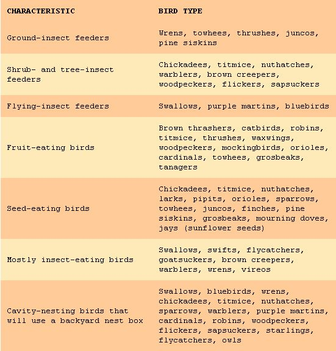

Make Your Garden A Bird Habitat
You can make your yard and garden irresistible to birds and enjoy natural pest control.
By Kris Wetherbee
June/July 2001
In just one afternoon, thousands of unwanted bugs vanished from my garden. All I had to do was sit and watch from the comfort of my garden chair as a returning band of hungry swallows dove through the air to snatch up one pest insect after another. In fact, a single swallow can easily devour hundreds of bugs in a single afternoon feast.
Turning our 8,000-square-foot garden into an inviting bird habitat has been beneficial in many ways. Their acrobatics while catching bugs on the wing are fun to watch, and their ceaseless snacking has been a great form of natural insect control. Actually, many species of birds, such as warblers and wrens, dine almost exclusively on insects. Others enjoy a varied diet consisting of seeds and fruits to augment the steady insect diet. Even hummingbirds are known to snack on small insects such as aphids.
Natural pest control is just one of the benefits that birds can bring to your garden. By creating your own backyard bird haven, you'll enjoy an ever-changing spectacle of melodious sound, graceful movement and lively color. Plus, their antics provide hours of entertainment. To attract a wide variety of birds, you must provide the right environment. Do so and your yard and garden will become the favorite destination of any manner of bird.
Creating a bird-friendly habitat is a bit of a no-brainer. Simply provide the backyard basics - fine creature comforts we all need for survival: food, water, protective cover, and a cozy shelter in which to raise a family.
Plant a Bird-Friendly Habitat
It's no secret that birds aren't attracted to bare yards. Most experts agree that to attract a variety of beneficial birds to your garden, you need to create a multilayered canopy of plants, trees, vines and shrubs that offer a complete package of food, shelter and nesting sites. Simply put, the more plants you have, the more birds you'll have.
Nearby trees, vines and shrubs provide a place where birds can hide from predators or take cover from harsh weather, as well as a cozy spot to settle in for the night. Likewise, many of these plants also provide a bounty of seeds, fruits, nuts and nectar as well as plant-munching caterpillars and other insects that birds love to eat. This way, you'll also be creating a multilevel buffet for a variety of birds, whether they feed on the ground, in trees and bushes, or in the air.
My own garden includes a variety of groundcovers - from clovers to sweet woodruff - along with thymes, Roman chamomile and lady's mantle that house bugs for ground-feeding birds such as wrens, towhees and juncos. Goldfinches and pine siskins flock to feast on the seedheads from our many varieties of sunflower; they also like elecampane and purple coneflower. Wisteria vines are a haven for chickadees, viburnum shrubs and shelter nuthatches, and you'll always spy plenty of robins hanging out in our grapevines and jostaberry bushes. Surrounding our garden are numerous shrubs and trees - from hawthorns to oaks - that serve as an avian convention hall sure to delight birds and birdlovers alike.
When planning your bird-haven landscape, take a look at your existing vegetation and add to it as needed with additional layers of plants. For example, you might add heavenly bamboo, rhododendron or abelia bushes underneath existing trees. Cover fences with vines that can serve birds as hiding and nesting places as well offer up an additional food source. Honeysuckle, grapes, Virginia creeper and trumpet creeper are worthy candidates. For in-between layers, plant flowering annuals and ornamental grasses along with perennials like rudbeckia, coreopsis and asters. Other perennial favorites include poppies and liatris, along with globe thistle and goldenrod. Of course, no bird garden is complete without a variety of colorful, majestic sunflowers.
As you approach the taller layers of your canopied bird habitat, be sure to include a mix of fruit-bearing shrubs such as gooseberries, pyracanthas or hollies to appease berry eaters such as thrushes, robins and waxwings. Create a hedgerow with groups of trees and shrubs using three to five of a kind. Consider plants like mulberry, mountain ash, trailing blackberries and juniper. While trees are a must for any bird garden, you don't have to plant a towering forest to reap arboreal benefits. Even in small yards, petite trees like Japanese maples or dogwoods and witch hazels, as well as dwarf cherry and plum trees, can feel right at home. Of course, if space allows, be sure to include taller oaks, poplars and aspens for added appeal.
Create an Avian Haven
While a diverse selection of plants is essential when it comes to attracting birds, providing extra food, water and shelter can go a long way toward creating a complete bird haven. It's really quite simple. Provide bird basics as well as a few extra creature comforts and you'll attract more birds and more species of bird.
Just like humans, birds appreciate a wide variety of foods. Can you imagine eating the exact same food day after day? Even though your garden may provide a wealth of tasty insects, flower nectar and seeds, most birds will appreciate additional food served in a birdfeeder. Songbirds are more likely to stay longer and perhaps even nest in an area where there's an abundance of food, and a few well-placed feeders easily meet that demand. Put feeders in a sheltered area that's easily accessible to you, but within five to ten feet of trees or shrubs so birds have a convenient place to hide if threatened by neighborhood cats or other predators.
Tray or platform feeders, which are designed with an edge around the bottom to keep seeds from falling out and placed one to three feet above the ground, will entice ground-feeding birds such as juncos, sparrows, towhees and morning doves. Hopper feeders, which sport hoppers or perches on the sides, come in many shapes and sizes. Hung from a tree or mounted on a pole, hopper feeders attract grosbeaks, cardinals and jays. Suspended tube feeders, so named for their long, cylindrical shape, are favored by small birds like finches, nuthatches and chickadees.
Avoid waste by keeping your seed selection simple. Birdseed mixes often contain one or two types of seed not especially popular with birds, and they'll drop or kick those seeds out of the way to get to their favorite. Most songbirds prefer black-oil sunflower seeds. White millet, popular among ground-feeding birds, is a good filler for tray or platform feeders. Fill a suspended tube feeder with thistle seeds for goldfinches, siskins or redpolls.
An offering of fresh fruit served on a ready-made fruit feeder will tempt brightly colored birds like tanagers, bluebirds and waxwings. Orioles love oranges. You can make your own fruit feeder by driving several long nails through a board attached to the base of a platform feeder. Then, stick the fruit on the nails, shish kebab-style.
A water supply not only quenches a bird's thirst, but also gives them a place where they can dip into a refreshing bath. Adding a bath or fountain brings in birds like vireos and warblers that aren't usually tempted by feeders - like other animals, humans included, birds are drawn to the sound of splashing water. Any shallow, waterproof pan, garbage can lid or large plant saucer placed on a flat rock or log stump can serve as a birdbath. Even a clean plastic pan, such as the type used as a litter box, will do. To roughen up smooth surfaces, apply safety footing like the kind sold for bathtubs. For aesthetic appeal, though, there's nothing like the charm of a decorative birdbath. Those that gently slope to a center depth of no more than three inches are best. Of course, the melody of a gurgling fountain is music to any creature's ears.
Birdhouses can be used by any of 35 North-American bird species. Some species are found throughout the United States, but others are native to specific areas. The bluebird is a good example - the Eastern bluebird being indigenous to the Eastern part of the country, and the Western bluebird sticking close to the Western states. Thus, the species of bird that will set up housekeeping in your birdhouse is determined by three factors: where you live, the surrounding habitat, and the type and size of birdhouse you put up.
Ideally, your birdhouse should be built from an untreated, rough-sawn, high-resin wood such as redwood, cypress or cedar. As far as dimensions go, the most important is the diameter of the entrance hole, which determines what kind of bird will move in. For instance, a house designed for chickadees requires a 1 1/8-inch diameter hole, while nuthatches, titmice, downy woodpeckers and swallows flock to a diameter of 1 1/4 inches. We have a few birdhouses with a 1 1/2-inch diameter hole for our bluebirds. Generally speaking, the bigger the house and entrance hole, the bigger the bird species that will inhabit it.
The placement and height of your birdhouse will also determine what kind of bird will claim residence. An average height of 10 feet above ground will suffice for most cavity-dwelling bird species, but 6 to 10 feet above ground is best for wrens and bluebirds, 10 to 15 feet is ideal for swallows, and 12 to 20 feet is suited for purple martins and nuthatches. The best location for all birdhouses is out of direct sunlight in an area protected from weather extremes with the entrance hole facing away from prevailing winds.
Relax a Bit
In the bird-friendly garden, neglecting certain garden chores is OK. In fact, it's highly encouraged! Forget about deadheading flowers, hauling off all the garden trimmings and cutting down that dying tree. Go ahead and deadhead flowers in summer to keep plants blooming longer, but once fall has arrived leave them alone so the maturing flowerheads can produce seeds. The seedheads of sedums are nature's birdfeeders for seed-eating birds like sparrows and grosbeaks, while the black seed of the purple coneflower serve as food for goldfinches.
Brush piles can be alluring spots for some birds to nest and rest. Unpruned shrubs, like the blackberry vines near our garden, offer more niches and crannies for birds to hide. As well as providing cover, they're also a good food source. As long as there is no threat to people or property, let dead or dying trees stay. Hollow trees give bluebirds, woodpeckers, owls and other cavity-nesting birds a place to roost at night. Dead or dying trees are nutritional goldmines, providing an environment for beneficial fungi as well as tunneling insects and grubs that hide beneath the bark.
You should even leave some areas implanted. Choose a sunny location and create a dustbath for birds by allowing a small area to remain bare. Let a few of last year's vines and perennial stalks linger so they can serve as nesting material for birds in spring. I once left a burlap sack in the garden only to discover a chickadee pulling out the fibers to use in building its nest.
In no time at all you'll have a garden full of creature comforts that attract a variety of birds. And while they're enjoying the amenities, treat yourself to a pair of binoculars, a tall, cool drink and that ever-cozy hammock. After all, you'll need a place of your own where you can simply relax and watch your new feathered friends at work.
What to Feed Birds
You will be able to attract birds to your home more easily after learning the preferences of various bird species. Most songbirds eat a varied diet that usually includes bugs. See the chart in the image gallery for a little background on some of the birds that may drop in for a meal. With encouragement, they might stay.
|
 RICK WETHERBEE The greater the variety of foliage you provide, the more birds you'll attract to your garden. |
 RICK WETHERBEE Attract more birds to your yard by giving them a sound roof and reliable source of food and water. |
 RICK WETHERBEE Songbirds are more likely to stay longer in an area where there's an abundance of food and a few well-placed feeders. |
 RICK WETHERBEE Adding a bath or fountain will attract birds to your yard. |
 The MOTHER EARTH NEWS editors The food preferences of various birds. |
|